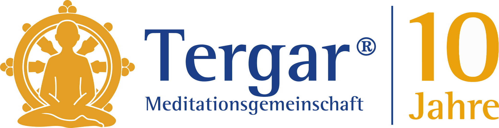
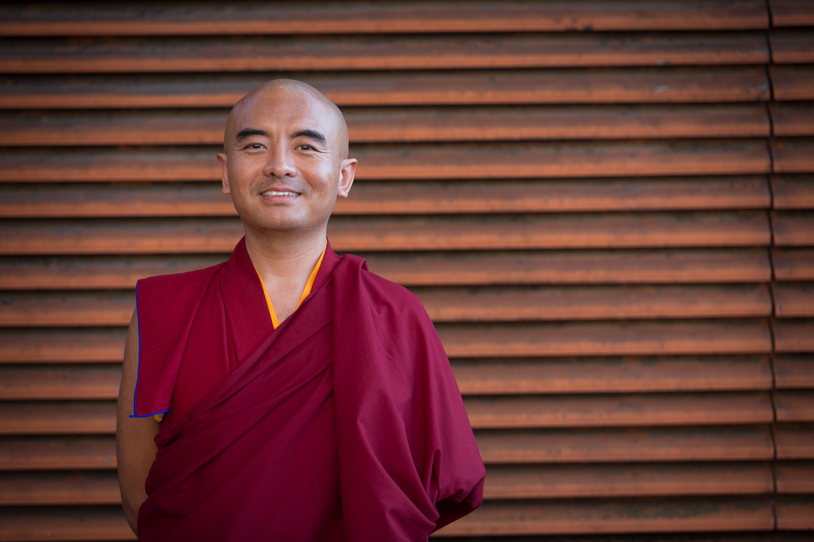
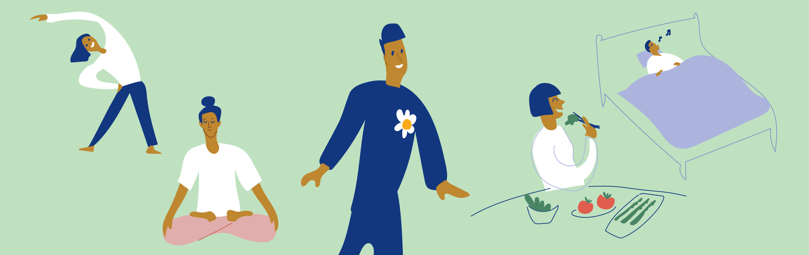

Tergar Quiz zum 10-jährigen Jubiläum
Frage 1 von 20
Praxis

10 Jahre Verbundenheit & Inspiration
Ein interaktiver Rückblick auf zehn Jahre Tergar im deutschsprachigen Raum: gemeinsames Üben, lebendige Begegnungen und kleine Aha-Momente zur Praxis.


Tergar Quiz zum 10-jährigen Jubiläum
Das war das Jubiläums-Quiz zum Community Praxistag. Schön, dass du dabei warst.